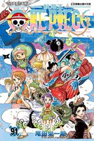

《ONE PIECE》
作者：日本漫畫家尾田栄一郎
出版社：集英社旗下雜誌《週刊少年Jump》連載
系列別： 少年
圖書分級：普遍級
ISBN：978-626-347-462-8
定價：新台幣售價：110 元
出版日期：2023/1/5


Step 1魚人島篇
Step 2多雷斯羅薩篇
Step 3世界會議篇
最後之海 新世界篇（最後の海 新世界編）為《ONE PIECE》的第二部故事。
Step 1魚人島篇（魚人島編，收錄卷數：第61～66卷，收錄話數：第598～653話，動畫：第517～574集） 歷經兩年修行後重逢的草帽海賊團為了前往新世界，而出發邁向位於海底一萬公尺以下處的「魚人島」。他們遇到吉貝爾並得知魚人島的悲傷歷史，原本魚人島繼承已故王妃的想法、漸漸地接近與人類和平共處的理想，但是由荷帝·瓊斯所率領的新魚人海賊團卻粉碎這個理念企圖攻擊掌控魚人島藉此侵占陸地。草帽海賊團挺身阻止荷帝所率領的「新魚人海賊團」並與白星公主為首的魚人與人類之間開始建立新的羈絆。
龐克哈薩特篇（パンクハザード編，收錄卷數：第66～70卷，收錄話數：第654～699話，動畫：第579～625集） 草帽海賊團與新任王下七武海托拉法爾加·D·瓦特爾·羅相遇，魯夫接受羅的提議組成「海賊同盟」，目標是「四皇」之一的「百獸」海道。他們靠著這強力的同盟來對抗在龐克哈薩特製造人工惡魔果實的凱薩·克勞恩。
《和之國篇 ワノ国編，收錄卷數：第90卷～105卷，收錄話數：第909話～1057話，動畫：第891集～》
索隆等人按錦衛門的要求偽裝成和之國國民。另一方面魯夫等人先後抵達四皇「百獸」海道駐紮的和之國。然而魯夫為了保護碰巧認識的玉兒攻擊海道的部下受到追捕。之後魯夫與錦衛門等人會合得知和桃之助他們其實是從二十年前的和之國「穿越時空來到現在」，為了實現光月家御田的遺願，決定在兩個禮拜後火祭神樂之日攻進統治和之國的海道所居住的「鬼島」討伐「百獸」海道及黑炭大蛇為目標展開戰鬥。 
多雷斯羅薩篇（ドレスローザ編，收錄卷數：第70～80卷，收錄話數：第700～801話，動畫：第629～746集） 草帽海賊團和羅潛入到唐吉訶德·多佛朗明哥治理下的王國「多雷斯羅薩」與多佛朗明哥旗下人馬展開對決，期間與革命軍參謀總長兼魯夫的義兄薩波重逢，在擊敗多佛朗明哥後，多佛朗明哥在多雷斯羅薩所實施的「統治」就此結束。而作為檯面下引路人的多佛朗明哥的垮台也使得世界局勢開始出現大幅度的變化。
佐烏篇（ゾウ編，收錄卷數：第80～82卷，收錄話數：第802～822話，動畫：第751～779集） 魯夫等人到佐烏國家與娜美等人會合，但此國家卻已呈現潰滅狀態。魯夫一行人追查發生在這個國家的秘密卻意外發現香吉士出身為殺手家族—傑爾馬66。魯夫一行人為了阻止香吉士結婚正在思考救回他的方法時，意外得知和之國光月一族的秘密。魯夫等人得知這件驚人事實於是將下一個擊倒的目標鎖定為四皇「百獸」海道。魯夫、索隆與和之國光月一族及佐烏的住民為各自的目的分組團隊。
圓蛋糕島篇（ホールケーキアイランド編，收錄卷數：第82～90卷，收錄話數：第823～902話，動畫：第783～877集） 魯夫團隊前往四皇「BIG MOM」夏洛特·莉莉所在的「萬國」蛋糕島準備找回要結婚的香吉士。魯夫等人理解香吉士與家族聯姻的真正理由再度和吉貝爾相會，並與想要暗殺BIG MOM的火戰車海賊團、 凱薩·克勞恩組成暫時聯盟，成功破壞雙方聯姻婚禮，救出香吉士和其家族杰爾馬66。吉貝爾為實踐理念正式宣布退出BIG MOM旗下與辭別太陽海賊團，以掌舵手的身分加入草帽海賊團。在一行人達成目的後逃出BIG MOM的領地，期間魯夫與BIG MOM海賊團的夏洛特·卡塔克利展開激烈對決在最後的對決中獲勝。
Step 3 世界會議篇（世界会議編，收錄卷數：第90卷；收錄話數：第903～908話，動畫：第878～890集） 世界政府加盟國裡作為代表的五十個國家，再度前往「聖地」馬力喬亞召開每四年一次的世界會議，商討世界大局政策。